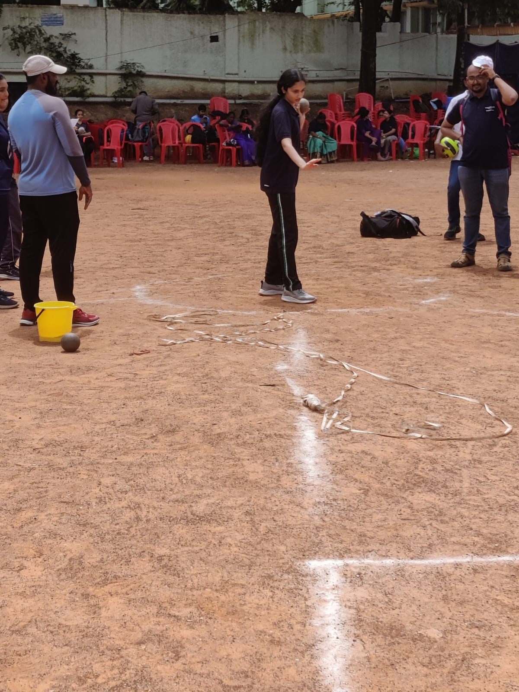

Sports Day — Javelin Throw, Shot Put & Basketball

Competed in track and field events representing my college on Sports Day — including Javelin Throw, Shot Put, and Basketball. Athletics has always been a space where I push my physical and mental limits. The discipline required in sport — the focus under pressure, the persistence through failure, the commitment to showing up — has shaped how I approach every challenge in life.
More >>
Track and field events like Javelin Throw and Shot Put require a combination of explosive strength, technical precision, and mental composure. Each throw is a moment of complete focus — every distraction disappears, and it's just you, the implement, and the arc of your movement through space.
Basketball added a completely different dimension — teamwork, communication, and the ability to read and respond to others in real time. Playing as part of a team taught me skills that no classroom can fully replicate: trust, adaptability, and the ability to perform under collective pressure.
Sports Day at KHPS Base PU College is one of the most anticipated events of the year. Competing for my college in multiple events was a source of tremendous pride, and the experience reinforced my belief that physical discipline and intellectual discipline are not separate — they are deeply connected.
Show less
Bharatanatyam — A Lifelong Practice
Bharatanatyam is one of India's oldest classical dance forms, with roots stretching back over two thousand years. I have been a dedicated student of Bharatanatyam for many years, training rigorously in technique, expression, and the rich storytelling tradition of the form.
My passion for Bharatanatyam directly inspired one of my most personal projects — the Araimandi Posture Corrector, a computer vision tool built to help dancers perfect the foundational half-sit stance of the form. It was a way of bringing together two of my greatest passions: technology and dance.
More >>
Bharatanatyam demands total commitment. The practice begins with mastering the physical fundamentals — posture, footwork, hand gestures — before progressing to the emotional and narrative dimensions of performance. Every performance tells a story, drawn from mythology, devotion, and the full spectrum of human experience.
Training in Bharatanatyam has given me discipline, stage presence, and an appreciation for the value of mastery — the understanding that true skill comes only through years of patient, deliberate practice. It has also given me a deep connection to India's cultural heritage, and a desire to help preserve and share it.
The connection between my dance practice and my technology work is something I think about often. The Araimandi Posture Corrector emerged from a real problem I experienced as a dancer — the difficulty of receiving accurate, objective feedback on your posture when you cannot see yourself from the outside. Technology, in this case, became a tool for art.
Show less
Reading — A Lifelong Habit
Reading has been one of the constants of my life. From science and technology to philosophy, fiction and history — books have shaped my thinking, broadened my perspective, and fuelled the curiosity that drives everything I do. I believe that the best engineers, researchers and innovators are also deep readers — because great ideas rarely come from one domain alone.